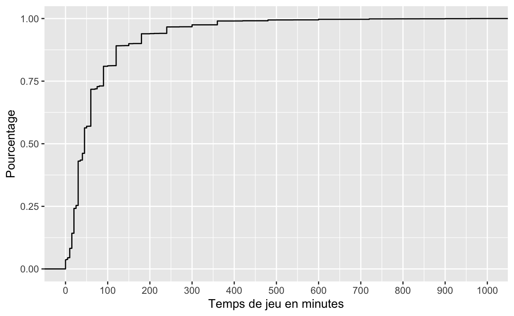
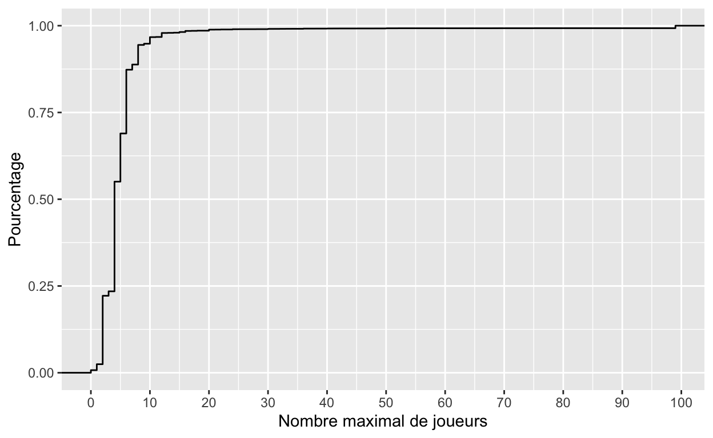
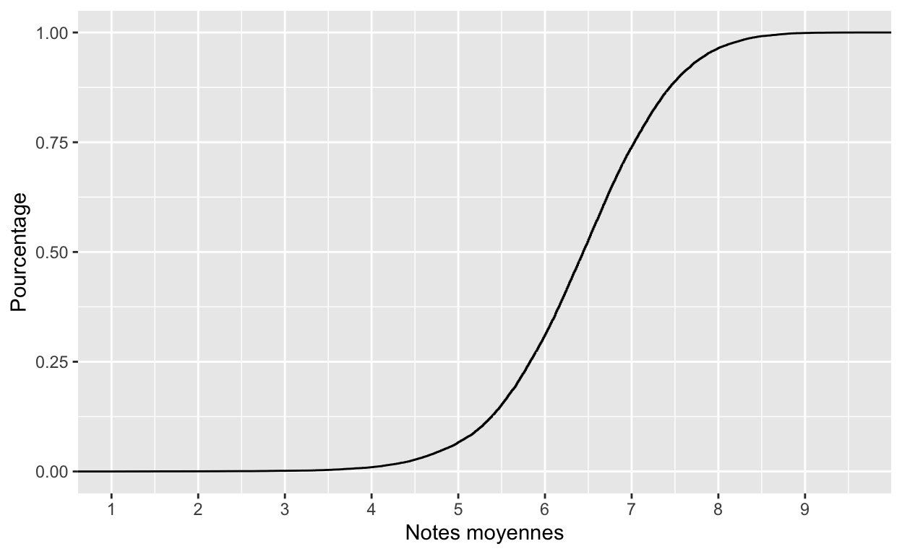
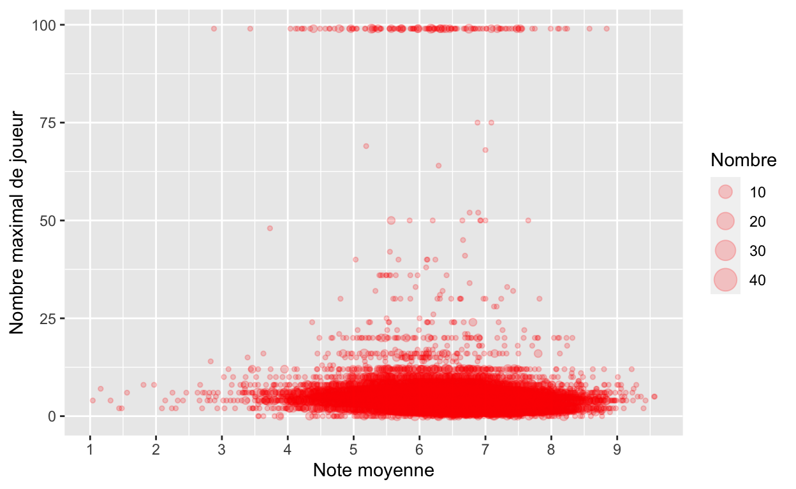
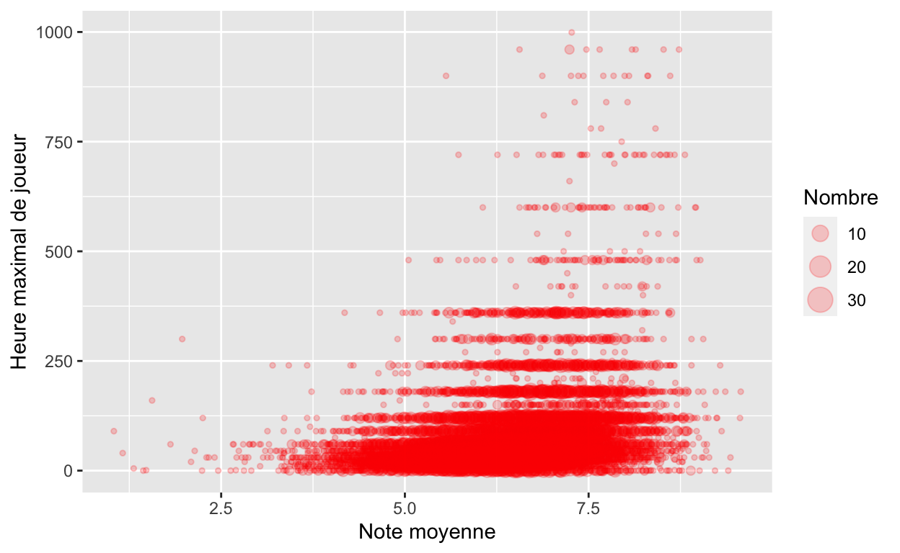

Dans cet article, je vais analyser des données issues de Tidy Tuesday dénommé Board Games Database. Je vais tenter de répondre à la question de savoir est ce que le nombre de joueurs ainsi que le temps passé à jouer influencent-ils les notes données?
Pour y parvenir, je vais commencer par faire une visualisation des données pour ensuite faire des statistiques.
Les données
Les données sont issues de tydituesday. Plus précisément, il s’agit des données datées du 25-01-2022 provenant de Kaggle et concerne les Board Games.
Visualisation des données
Importer le dataset
Étant donné que les données contiennent deux tableurs, il est donc nécessaire de les joindre les deux afin de faciliter l’analyse.
#ratings
df <- head(ratings)
urls <- df$thumbnail
df <- df %>%
mutate(thumbnail = "")
kbl(df, digits = 2, format = "html", row.names = TRUE, align = 'l', caption = "Notes des jeux vidéos") %>%
kable_paper(full_width = F, html_font = "Cambria") %>%
kableExtra::kable_styling(position = "center") %>%
column_spec(11, image = spec_image(urls, width = 300, height = 300))
| num | id | name | year | rank | average | bayes_average | users_rated | url | thumbnail | |
|---|---|---|---|---|---|---|---|---|---|---|
| 1 | 105 | 30549 | Pandemic | 2008 | 106 | 7.59 | 7.49 | 108975 | /boardgame/30549/pandemic |
/pic1534148.jpg)
|
| 2 | 189 | 822 | Carcassonne | 2000 | 190 | 7.42 | 7.31 | 108738 | /boardgame/822/carcassonne |
/pic6544250.png)
|
| 3 | 428 | 13 | Catan | 1995 | 429 | 7.14 | 6.97 | 108024 | /boardgame/13/catan |
/pic2419375.jpg)
|
| 4 | 72 | 68448 | 7 Wonders | 2010 | 73 | 7.74 | 7.63 | 89982 | /boardgame/68448/7-wonders |
/pic860217.jpg)
|
| 5 | 103 | 36218 | Dominion | 2008 | 104 | 7.61 | 7.50 | 81561 | /boardgame/36218/dominion |
/pic394356.jpg)
|
| 6 | 191 | 9209 | Ticket to Ride | 2004 | 192 | 7.41 | 7.30 | 76171 | /boardgame/9209/ticket-ride |
/pic38668.jpg)
|
#details
kbl(head(details), digits = 2, format = "html", row.names = TRUE, align = 'l', caption = "Details des jeux vidéos") %>%
kable_paper(full_width = F, html_font = "Cambria") %>%
scroll_box(width = "1000px", height = "400px") %>%
kableExtra::kable_styling(position = "center", bootstrap_options = "striped")
| num | id | primary | description | yearpublished | minplayers | maxplayers | playingtime | minplaytime | maxplaytime | minage | boardgamecategory | boardgamemechanic | boardgamefamily | boardgameexpansion | boardgameimplementation | boardgamedesigner | boardgameartist | boardgamepublisher | owned | trading | wanting | wishing | |
|---|---|---|---|---|---|---|---|---|---|---|---|---|---|---|---|---|---|---|---|---|---|---|---|
| 1 | 0 | 30549 | Pandemic | In Pandemic, several virulent diseases have broken out simultaneously all over the world! The players are disease-fighting specialists whose mission is to treat disease hotspots while researching cures for each of four plagues before they get out of hand. The game board depicts several major population centers on Earth. On each turn, a player can use up to four actions to travel between cities, treat infected populaces, discover a cure, or build a research station. A deck of cards provides the players with these abilities, but sprinkled throughout this deck are Epidemic! cards that accelerate and intensify the diseases’ activity. A second, separate deck of cards controls the "normal" spread of the infections. Taking a unique role within the team, players must plan their strategy to mesh with their specialists’ strengths in order to conquer the diseases. For example, the Operations Expert can build research stations which are needed to find cures for the diseases and which allow for greater mobility between cities; the Scientist needs only four cards of a particular disease to cure it instead of the normal five—but the diseases are spreading quickly and time is running out. If one or more diseases spreads beyond recovery or if too much time elapses, the players all lose. If they cure the four diseases, they all win! The 2013 edition of Pandemic includes two new characters—the Contingency Planner and the Quarantine Specialist—not available in earlier editions of the game. Pandemic is the first game in the Pandemic series. | 2008 | 2 | 4 | 45 | 45 | 45 | 8 | [‘Medical’] | [‘Action Points’, ‘Cooperative Game’, ‘Hand Management’, ‘Point to Point Movement’, ‘Set Collection’, ‘Trading’, ‘Variable Player Powers’] | [‘Components: Map (Global Scale)’, ‘Components: Multi-Use Cards’, ‘Digital Implementations: Board Game Arena’, ‘Game: Pandemic’, ‘Medical: Diseases’, ‘Occupation: Dispatcher’, ‘Occupation: Medic / Doctor / Nurses’, ‘Occupation: Researcher / Scientist’, ‘Region: The World’] | [‘Pandemic: Gen Con 2016 Promos – Z-Force Team Member/Game Convention’, ‘Pandemic: In the Lab’, ‘Pandemic: On the Brink’, ‘Pandemic: Promo Roles’, ‘Pandemic: State of Emergency’, ‘Pandemic: Survival Promos – Crisis Mitigator/Relocation Specialist’, ‘Pandemie: Uitbreiding “De Generalist”’] | [‘Pandemic Legacy: Season 0’, ‘Pandemic Legacy: Season 1’, ‘Pandemic Legacy: Season 2’, ‘Pandemic: Fall of Rome’, ‘Pandemic: Hot Zone – Europe’, ‘Pandemic: Hot Zone – North America’, ‘Pandemic: Iberia’, ‘Pandemic: Reign of Cthulhu’, ‘Pandemic: Rising Tide’, ‘Pandemic: The Cure’, ‘World of Warcraft: Wrath of the Lich King’] | [‘Matt Leacock’] | [‘Josh Cappel’, ‘Christian Hanisch’, ‘Régis Moulun’, ‘Chris Quilliams’, ‘Tom Thiel’] | [‘Z-Man Games’, ‘Albi’, ‘Asmodee’, ‘Asmodee Italia’, ‘Asterion Press’, ‘Bergsala Enigma (Enigma)’, ‘Brain Games’, ‘Devir’, ‘Filosofia Éditions’, ‘Galápagos Jogos’, ‘Gém Klub Kft.’, ‘HaKubia’, ‘Hobby Japan’, ‘HomoLudicus’, ‘Jolly Thinkers’, ‘Kaissa Chess & Games’, ‘Korea Boardgames Co., Ltd.’, ‘Lacerta’, ‘Lautapelit.fi’, ‘Lifestyle Boardgames Ltd’, ‘MINDOK’, ‘Nordic Games GmbH’, ‘Paladium Games’, ‘Pegasus Spiele’, ‘Quined White Goblin Games’, ‘Rebel Sp. z o.o.’, ‘Siam Board Games’, ‘Stratelibri’, ‘Wargames Club Publishing’, ‘White Goblin Games’, ‘Zhiyanjia’, ‘Ігромаг’, ‘Взрослые дети’] | 168364 | 2508 | 625 | 9344 |
| 2 | 1 | 822 | Carcassonne | Carcassonne is a tile-placement game in which the players draw and place a tile with a piece of southern French landscape on it. The tile might feature a city, a road, a cloister, grassland or some combination thereof, and it must be placed adjacent to tiles that have already been played, in such a way that cities are connected to cities, roads to roads, etcetera. Having placed a tile, the player can then decide to place one of their meeples on one of the areas on it: on the city as a knight, on the road as a robber, on a cloister as a monk, or on the grass as a farmer. When that area is complete, that meeple scores points for its owner. During a game of Carcassonne, players are faced with decisions like: "Is it really worth putting my last meeple there?" or "Should I use this tile to expand my city, or should I place it near my opponent instead, giving him a hard time to complete their project and score points?" Since players place only one tile and have the option to place one meeple on it, turns proceed quickly even if it is a game full of options and possibilities. First game in the Carcassonne series. | 2000 | 2 | 5 | 45 | 30 | 45 | 7 | [‘City Building’, ‘Medieval’, ‘Territory Building’] | [‘Area Majority / Influence’, ‘Map Addition’, ‘Tile Placement’] | [‘Cities: Carcassonne (France)’, ‘Components: Meeples (Black)’, ‘Components: Meeples (Blue)’, ‘Components: Meeples (Green)’, ‘Components: Meeples (Red)’, ‘Components: Meeples (Yellow)’, ‘Components: Wooden pieces & boards’, ‘Country: France’, ‘Digital Implementations: Board Game Arena’, ‘Game: Carcassonne’, ‘Region: Languedoc (France)’] | [‘20 Jahre Darmstadt Spielt’, ‘Apothecaries (fan expansion for Carcassonne)’, ‘Apothecaries and Tithes (fan expansion for Carcassonne)’, ‘Die Bettler (Fan-Erweiterung für Carcassonne)’, ‘The Big Black Pig Escape (Fan expansion to Carcassonne)’, ‘Breweries (fan expansion for Carcassonne)’, ‘Carcassonne Maps: Benelux’, ‘Carcassonne Maps: Deutschland’, ‘Carcassonne Maps: France’, ‘Carcassonne Maps: Great Britain’, ‘Carcassonne Maps: Península Ibérica’, ‘Carcassonne Maps: Taiwan’, ‘Carcassonne Maps: USA East’, ‘Carcassonne Maps: USA West’, ‘Carcassonne: Bonusplättchen Spiel 2014’, ‘Carcassonne: Bonusplättchen Spiel 2015’, ‘Carcassonne: Bonusplättchen Spiel 2016’, ‘Carcassonne: Bonusplättchen Spiel 2017’, ‘Carcassonne: Bonusplättchen Spiel 2018’, ‘Carcassonne: Bonusplättchen Spiel 2019’, ‘Carcassonne: Bonusplättchen Spiel 2020’, ‘Carcassonne: Bonusplättchen Spiel 2021’, ‘Carcassonne: Castles in Germany’, ‘Carcassonne: Corn Circles II’, ‘Carcassonne: Cult, Siege & Creativity’, ‘Carcassonne: CutCassonne’, ‘Carcassonne: Darmstadt’, ‘Carcassonne: Das Labyrinth’, ‘Carcassonne: Der Tunnel’, ‘Carcassonne: Die Belagerer’, ‘Carcassonne: Die Katharer’, ‘Carcassonne: Die Kornkreise’, ‘Carcassonne: Die Märkte zu Leipzig’, ‘Carcassonne: Die Wahrsagerin’, ‘Carcassonne: Die Windrosen’, ‘Carcassonne: Easter in Carcassonne’, ‘Carcassonne: Expansion 1 – Inns & Cathedrals’, ‘Carcassonne: Expansion 10 – Under the Big Top’, ‘Carcassonne: Expansion 2 – Traders & Builders’, ‘Carcassonne: Expansion 3 – The Princess & The Dragon’, ‘Carcassonne: Expansion 4 – The Tower’, ‘Carcassonne: Expansion 5 – Abbey & Mayor’, ‘Carcassonne: Expansion 6 – Count, King & Robber’, ‘Carcassonne: Expansion 7 – The Catapult’, ‘Carcassonne: Expansion 8 – Bridges, Castles and Bazaars’, ‘Carcassonne: Expansion 9 – Hills & Sheep’, ‘Carcassonne: German Cathedrals’, ‘Carcassonne: GQ Promo Tiles’, ‘Carcassonne: Halb so Wild’, ‘Carcassonne: Halb so wild I’, ‘Carcassonne: Halb so wild II’, ‘Carcassonne: King & Scout’, ‘Carcassonne: Klöster in Deutschland’, ‘Carcassonne: Kreivi ja Kuningas’, ‘Carcassonne: La Porxada’, ‘Carcassonne: Little Buildings’, ‘Carcassonne: Mage & Witch’, ‘Carcassonne: Nikolaus-Zählleiste’, ‘Carcassonne: Spiel Doch Mini Expansion’, ‘Carcassonne: Spiel Doch! Expansion’, ‘Carcassonne: The Barber-Surgeons’, ‘Carcassonne: The City Gates’, ‘Carcassonne: The Count of Carcassonne’, ‘Carcassonne: The Cult’, ‘Carcassonne: The Ferries’, ‘Carcassonne: The Festival’, ‘Carcassonne: The Flying Machines’, ‘Carcassonne: The Fruit-Bearing Trees’, ‘Carcassonne: The Gifts’, ‘Carcassonne: The Gold Mines’, ‘Carcassonne: The Land Surveyors’, ‘Carcassonne: The Messengers’, ‘Carcassonne: The Peasant Revolts’, ‘Carcassonne: The Phantom’, ‘Carcassonne: The Plague’, ‘Carcassonne: The River’, ‘Carcassonne: The River II’, ‘Carcassonne: The Robbers’, ‘Carcassonne: The School’, ‘Carcassonne: The Signposts’, ‘Carcassonne: The Tollkeepers’, ‘Carcassonne: Watchtowers’, ‘Castles in Hungary (fan expansion to Carcassonne)’, ‘Circles in the Forest (fan expansion for Carcassonne)’, ‘Cleric And Serf (fan expansion to Carcassonne)’, ‘The Coast (fan expansion for Carcassonne)’, ‘Corn Circles 3 (fan expansion to Carcassonne)’, ‘Divided Cities (fan expansion for Carcassonne)’, ‘Dragon Hunters (fan expansion to Carcassonne)’, ‘Dragon Killers (fan expansion for Carcassonne)’, ‘Dragon Rider Slayer (fan expansion for Carcassonne: The Princess & The Dragon)’, ‘Drought and Pestilence (fan expansion for Carcassonne)’, ‘Eisenbahn (fan expansion for Carcassonne)’, ‘Die Eroberer (fan Expansion to Carcassonne)’, ‘Evergreen Forest (fan expansion to Carcassonne)’, ‘Family Feud (fan expansion to Carcassonne)’, ‘Fields and Vineyards (fan expansion for Carcassonne)’, ‘Fischerhütte (Fan-Erweiterung für Carcassonne)’, ‘Fisherman: Angler & Fish Farm (fan expansion for Carcassonne)’, ‘Fisherman: Swan Lake (fan expansion for Carcassonne)’, ‘Fisherman: Waterfalls (fan expansion for Carcassonne)’, ‘Fishing Boats (fan expansion to Carcassonne)’, ‘Forests (fan expansion for Carcassonne)’, ‘Forests: An Apple a Day (fan expansion for Carcassonne)’, ‘Forests: Fairy Tales (fan expansion for Carcassonne)’, ‘Forests: The Forest Fire (fan expansion for Carcassonne)’, ‘Forests: Timber! (fan expansion for Carcassonne)’, ‘Friar & Farmhand (fan expansion for Carcassonne)’, ‘Fruit Trader (fan expansion to Carcassonne)’, ‘The Gallows (fan expansion for Carcassonne)’, ‘Gold Mines (fan expansion for Carcassonne)’, ‘The Grim Reaple (fan expansion for Carcassonne)’, ‘Holzfäller & Müller (Fan Erweiterung für Carcassonne)’, ‘In the Stocks (fan expansion for Carcassonne)’, ‘Inn & Stable Owners (fan expansion to Carcassonne)’, ‘The Jester and the Minstrel (fan expansion to Carcassonne)’, ‘Jousting Tournament (fan expansion for Carcassonne)’, ‘Kettle of Fish (fan expansion to Carcassonne)’, ‘Lakelands (fan expansion for Carcassonne)’, ‘The Land Surveyors 2 (fan expansion for Carcassonne)’, ‘Landschaftskarten die Dritte (Fan-Erweiterung für Carcassonne)’, ‘Lavender Fields (fan expansion to Carcassonne)’, ‘Lord of the Manor (fan expansion for Carcassonne)’, ‘The Medieval Expansion (fan expansion for Carcassonne)’, ‘Merry Men (fan expansion to Carcassonne)’, ‘Mills and Bakeries (fan expansion for Carcassonne)’, ‘More River (fan expansion for Carcassonne)’, ‘The Mount of the Duke (fan expansion for Carcassonne)’, ‘Mountains (fan expansion for Carcassonne)’, ‘Nochmal neue Landschaftskarten (Fan-Erweiterung für Carcassonne)’, ‘The Ocean (fan expansion for Carcassonne)’, ‘The Orders of Chivalry (fan expansion for Carcassonne)’, ‘Outposts (fan expansion to Carcassonne)’, ‘Pirate Coast (fan expansion for Carcassonne)’, ‘The Pope of Avignon (fan expansion for Carcassonne)’, ‘Ramparts (fan expansion for Carcassonne)’, ‘River System (fan expansion for Carcassonne)’, ‘Spielbox-Almanach 25 Jahre Hans im Glück Beilage’, ‘Tithe barns (fan expansion to Carcassonne)’, ‘Troubadours (fan expansion for Carcassonne)’, ‘Truppenaufmarsch (Fan-Erweiterung für Carcassonne)’, ‘Upper Carcassonne (fan expansion for Carcassonne)’, ‘Wald (Fan Erweiterung für Carcassonne)’, ‘Die Wälder von Carcassonne V2 (Fan Erweiterung für Carcassonne)’, ‘Weg durch die Stadt (Fan-Erweiterung für Carcassonne)’, ‘Wells (fan expansion for Carcassonne)’, ‘Wells: Fountain of Youth (fan expansion for Carcassonne)’, ‘Wells: Wishing Wells (fan expansion for Carcassonne)’, ‘Wheat Fields (fan expansion for Carcassonne)’, ‘Wine Merchant (fan expansion to Carcassonne)’, ‘Каркассон: Дворяне и Башни’, ‘Каркассон: Наука и магия’, ‘Каркассон: Предместья и обитатели’, ‘Каркассон: Солове́й-Разбо́йник & Водяной’, ‘Каркассон: тайл Избушка’] | [‘The Ark of the Covenant’, ‘Carcassonne für 2’, ‘Carcassonne Junior’, ‘Carcassonne: Amazonas’, ‘Carcassonne: Demonstration’, ‘Carcassonne: Gold Rush’, ‘Carcassonne: Hunters and Gatherers’, ‘Carcassonne: Over Hill and Dale’, ‘Carcassonne: Safari’, ‘Carcassonne: South Seas’, ‘Carcassonne: Star Wars’, ‘Carcassonne: The Castle’, ‘Carcassonne: The City’, ‘Carcassonne: The Discovery’, ‘Carcassonne: Winter Edition’, ‘New World: A Carcassonne Game’, ‘Travel Carcassonne’] | [‘Klaus-Jürgen Wrede’] | [‘Doris Matthäus’, ‘Anne Pätzke’, ‘Chris Quilliams’, ‘Klaus-Jürgen Wrede’] | [‘Hans im Glück’, ‘999 Games’, ‘Albi’, ‘Bard Centrum Gier’, ‘Bergsala Enigma (Enigma)’, ‘Brain Games’, ‘cutia.ro’, ‘Devir’, ‘Fantasmagoria’, ‘Filosofia Éditions’, ‘Giochi Uniti’, ‘Grow Jogos e Brinquedos’, ‘Hobby World’, ‘Ísöld ehf.’, ‘Kaissa Chess & Games’, ‘Korea Boardgames Co., Ltd.’, ‘Lautapelit.fi’, ‘Midgaard Games’, ‘MINDOK’, ‘Möbius Games’, ‘Monkey Time’, ‘NeoTroy Games’, ‘Nordic Games ehf’, ‘Paper Iyagi’, ‘Piatnik’, ‘Ponva d.o.o.’, ‘Rio Grande Games’, ‘Schmidt Spiele’, ‘Smart Ltd’, ‘Stupor Mundi’, ‘SuperHeated Neurons’, ‘Swan Panasia Co., Ltd.’, ‘Venice Connection’, ‘Ventura Games’, ‘Z-Man Games’] | 161299 | 1716 | 582 | 7383 |
| 3 | 2 | 13 | Catan | In CATAN (formerly The Settlers of Catan), players try to be the dominant force on the island of Catan by building settlements, cities, and roads. On each turn dice are rolled to determine what resources the island produces. Players build by spending resources (sheep, wheat, wood, brick and ore) that are depicted by these resource cards; each land type, with the exception of the unproductive desert, produces a specific resource: hills produce brick, forests produce wood, mountains produce ore, fields produce wheat, and pastures produce sheep. Setup includes randomly placing large hexagonal tiles (each showing a resource or the desert) in a honeycomb shape and surrounding them with water tiles, some of which contain ports of exchange. Number disks, which will correspond to die rolls (two 6-sided dice are used), are placed on each resource tile. Each player is given two settlements (think: houses) and roads (sticks) which are, in turn, placed on intersections and borders of the resource tiles. Players collect a hand of resource cards based on which hex tiles their last-placed house is adjacent to. A robber pawn is placed on the desert tile. A turn consists of possibly playing a development card, rolling the dice, everyone (perhaps) collecting resource cards based on the roll and position of houses (or upgraded cities—think: hotels) unless a 7 is rolled, turning in resource cards (if possible and desired) for improvements, trading cards at a port, and trading resource cards with other players. If a 7 is rolled, the active player moves the robber to a new hex tile and steals resource cards from other players who have built structures adjacent to that tile. Points are accumulated by building settlements and cities, having the longest road and the largest army (from some of the development cards), and gathering certain development cards that simply award victory points. When a player has gathered 10 points (some of which may be held in secret), he announces his total and claims the win. CATAN has won multiple awards and is one of the most popular games in recent history due to its amazing ability to appeal to experienced gamers as well as those new to the hobby. Die Siedler von Catan was originally published by KOSMOS and has gone through multiple editions. It was licensed by Mayfair and has undergone four editions as The Settlers of Catan. In 2015, it was formally renamed CATAN to better represent itself as the core and base game of the CATAN series. It has been re-published in two travel editions, portable edition and compact edition, as a special gallery edition (replaced in 2009 with a family edition), as an anniversary wooden edition, as a deluxe 3D collector’s edition, in the basic Simply Catan, as a beginner version, and with an entirely new theme in Japan and Asia as Settlers of Catan: Rockman Edition. Numerous spin-offs and expansions have also been made for the game. | 1995 | 3 | 4 | 120 | 60 | 120 | 10 | [‘Economic’, ‘Negotiation’] | [‘Dice Rolling’, ‘Hexagon Grid’, ‘Income’, ‘Modular Board’, ‘Network and Route Building’, ‘Race’, ‘Random Production’, ‘Trading’, ‘Variable Set-up’] | [‘Animals: Sheep’, ‘Components: Hexagonal Tiles’, ‘Components: Wooden pieces & boards’, ‘Game: Catan’, ‘Promotional: Promo Board Games’] | [‘20 Jahre Darmstadt Spielt’, ‘Brettspiel Adventskalender 2015’, ‘Catan Austria / Wien meets Catan’, ‘Catan Geographies: Austria’, ‘Catan Geographies: Bayern Edition’, ‘Catan Geographies: Corsica’, ‘Catan Geographies: Georgia’, ‘Catan Geographies: Kennessee’, ‘Catan Geographies: Mallorca’, ‘Catan Geographies: North Rhine – Westphalia’, ‘Catan Geographies: Rickshaw Run’, ‘Catan Geographies: Settlers of Hesse’, ‘Catan Geographies: The Carolinas’, ‘Catan Länderszenarien: Polen’, ‘Catan Rhein-Main-Neckar’, ‘Catan Scenario: Crop Trust’, ‘Catan Scenario: Durango’, ‘Catan Scenarios: Easter Bunny’, ‘Catan Scenarios: #WeStayHome’, ‘Catan Scenarios: Big Game Big Honor’, ‘Catan Scenarios: Catanimals’, ‘Catan Scenarios: Frenemies’, ‘Catan Scenarios: Global Warming’, ‘Catan Scenarios: Helpers of Catan’, ‘Catan Scenarios: Oil Springs’, ‘Catan World Championship Berlin 2014 Special’, ‘Catan: 5-6 Player Extension’, ‘Catan: 999 Games 25 jaar Expansion’, ‘Catan: Catakatoa’, ‘Catan: Catan Day 2015 Exclusive Expansion’, ‘Catan: Cities & Knights’, ‘Catan: Cities & Knights – 5-6 Player Extension’, ‘Catan: Cities & Knights – Legend of the Conquerors’, ‘Catan: Delmarva’, ‘Catan: Die Stoffräuber’, ‘Catan: Event Cards’, ‘Catan: Explorers & Pirates’, ‘Catan: Explorers & Pirates – 5-6 Player Extension’, ‘Catan: Hawaii (Szenario für Seefahrer)’, ‘Catan: High Priests of the Inkas’, ‘Catan: Indiana & Ohio’, ‘Catan: New England’, ‘Catan: New York’, ‘Catan: Penn-Jersey’, ‘Catan: Playmat Desert’, ‘Catan: Playmat Gold’, ‘Catan: Seafarers’, ‘Catan: Seafarers Scenario – Legend of the Sea Robbers’, ‘Catan: Seafarers – 5-6 Player Extension’, ‘Catan: Seefahrer – 20 Jahre Jubiläums-Edition’, ‘Catan: Szenario Der Kölner Dom’, ‘Catan: Traders & Barbarians’, ‘Catan: Traders & Barbarians – 5-6 Player Extension’, ‘Catan: Treasures, Dragons & Adventurers’, ‘Der Hafenmeister’, ‘Heroes & Capitols (fan expansion for Settlers of Catan)’, ‘Hexen, Zauberer & Drachen (fan expansion for Catan: Cities and Knights)’, ‘Katani pankur’, ‘Kirche, Glaube & Reformation (fan expansion for Catan: Cities and Knights)’, ‘De Kolonisten van Catan: De Diamanten’, ‘De Kolonisten van Catan: De drie Handelsteden van Noord-Nederland’, ‘De Kolonisten van Catan: De Koloniën’, ‘De Kolonisten van Catan: De Specialisten’, ‘De Kolonisten van Catan: De Wereldwonderen’, ‘De Kolonisten van Catan: De Woestijnruiters’, ‘De Kolonisten van Catan: Het Grote Kanaal’, ‘Mayfair Game Variants & Mini-Expansions Set #1’, ‘Die Pioniere (fan expansion for The Settlers of Catan)’, “Saggsen-Gadan: De säggs’schn Siedler / Catan-OFFENSIVE in Chemnitz”, ‘Settlers of Catan Scenario: The Jungle’, ‘Settlers of Catan Scenario: The Volcano’, ‘The Settlers of Catan: The Fishermen of Catan’, ‘The Settlers of Catan: The Great River’, ‘Settlers of New Catan (and extra modules)’, ‘Die Siedler von Catan: Atlantis – Szenarien & Varianten’, ‘Die Siedler von Catan: Das Buch zum Spielen’, ‘Die Siedler von Catan: Der Schokoladenmarkt’, ‘Die Siedler von Catan: Die große Karawane’, ‘Die Siedler von Catan: Hispania Edition’, ‘Die Siedler von Catan: Historische Szenarien’, ‘Die Siedler von Catan: Historische Szenarien II’, ‘Die Siedler von Catan: Hochzeitsturm’, ‘Die Siedler von Catan: Renaissance in der Steiermark & Burgbau auf Chaffenberch’, ‘Die Siedler von Catan: Rincewind und der Tourist / Die Gilden von Ankh-Morpork’, ‘Die Siedler von Catan: Thüringen Edition’, ‘Die Siedler von Luxemburg’, ‘World Wonders (fan expansion for Catan)’] | [‘Baden-Württemberg Catan’, ‘Catan Geographies: Germany’, ‘Catan Histories: Merchants of Europe’, ‘Catan Histories: Rise of the Inkas’, ‘Catan Histories: Settlers of America – Trails to Rails’, ‘Catan Histories: Struggle for Rome’, ‘Catan: Ancient Egypt’, ‘Catan: Big Game Event Kit’, ‘Catan: Core + China Map’, ‘Catan: Family Edition’, ‘Catan: Portable Edition’, ‘Catan: Starfarers’, ‘Catan: Traveler – Compact Edition’, ‘The Communication in Catan’, ‘A Game of Thrones: Catan – Brotherhood of the Watch’, ‘The Kids of Catan’, ‘De Kolonisten van de Lage Landen’, ‘The Settlers of Canaan’, ‘Settlers of Catan: Gallery Edition’, ‘Settlers of Catan: Rockman Edition’, ‘The Settlers of the Stone Age’, ‘The Settlers of Zarahemla’, ‘Die Siedler von Catan: Junior’, ‘Die Siedler von Nürnberg’, ‘Simply Catan’, ‘Star Trek: Catan’, ‘The Starfarers of Catan’, ‘Das Wasser des Lebens’, ‘Wien Catan’] | [‘Klaus Teuber’] | [‘Volkan Baga’, ‘Tanja Donner’, ‘Pete Fenlon’, ‘Jason Hawkins’, ‘Michaela Kienle’, ‘Harald Lieske’, ‘Michael Menzel’, ‘Marion Pott’, ‘Matt Schwabel’, ‘Franz Vohwinkel’, ‘Stephen Graham Walsh’] | [‘KOSMOS’, ‘999 Games’, ‘Albi’, ‘Asmodee’, ‘Astrel Games’, ‘Bergsala Enigma (Enigma)’, ‘Brädspel.se’, ‘Brain Games’, ‘Broadway Toys LTD’, ‘Capcom Co., Ltd.’, ‘Catan Studio’, ‘Competo / Marektoy’, ‘danspil’, ‘Descartes Editeur’, ‘Devir’, ‘Dexy Co’, ‘Eurogames’, ‘Filosofia Éditions’, ‘Galakta’, ‘Giochi Uniti’, ‘GP Games’, ‘Grow Jogos e Brinquedos’, ‘HaKubia’, ‘Hanayama’, ‘Hobby World’, ‘Ideal Board Games’, ‘Igroljub’, ‘IntelliGames.BG’, ‘Ísöld ehf.’, ‘Kaissa Chess & Games’, ‘Korea Boardgames Co., Ltd.’, ‘L&M Games’, ‘Laser plus’, ‘Lautapelit.fi’, ‘Logojogos’, ‘Mayfair Games’, ‘Ninive Games’, ‘Paper Iyagi’, ‘Piatnik’, ‘Smart Ltd’, ‘Spilbræt.dk’, ‘Stupor Mundi’, ‘SuperHeated Neurons’, ‘Swan Panasia Co., Ltd.’, ‘Tilsit’, ‘Top Toys’, ‘TRY SOFT’, ‘Vennerød Forlag AS’] | 167733 | 2018 | 485 | 5890 |
| 4 | 3 | 68448 | 7 Wonders | You are the leader of one of the 7 great cities of the Ancient World. Gather resources, develop commercial routes, and affirm your military supremacy. Build your city and erect an architectural wonder which will transcend future times. 7 Wonders lasts three ages. In each age, players receive seven cards from a particular deck, choose one of those cards, then pass the remainder to an adjacent player. Players reveal their cards simultaneously, paying resources if needed or collecting resources or interacting with other players in various ways. (Players have individual boards with special powers on which to organize their cards, and the boards are double-sided). Each player then chooses another card from the deck they were passed, and the process repeats until players have six cards in play from that age. After three ages, the game ends. In essence, 7 Wonders is a card development game. Some cards have immediate effects, while others provide bonuses or upgrades later in the game. Some cards provide discounts on future purchases. Some provide military strength to overpower your neighbors and others give nothing but victory points. Each card is played immediately after being drafted, so you’ll know which cards your neighbor is receiving and how her choices might affect what you’ve already built up. Cards are passed left-right-left over the three ages, so you need to keep an eye on the neighbors in both directions. Though the box of earlier editions is listed as being for 3–7 players, there is an official 2-player variant included in the instructions. | 2010 | 2 | 7 | 30 | 30 | 30 | 10 | [‘Ancient’, ‘Card Game’, ‘City Building’, ‘Civilization’, ‘Economic’] | [‘Drafting’, ‘Hand Management’, ‘Set Collection’, ‘Simultaneous Action Selection’, ‘Variable Player Powers’] | [‘Ancient: Babylon’, ‘Ancient: Egypt’, ‘Ancient: Greece’, ‘Digital Implementations: Board Game Arena’, ‘Game: 7 Wonders’, ‘Mechanism: Artificial Player’, ‘Mechanism: Tableau Building’] | [‘7 Wonders: Armada’, ‘7 Wonders: Babel’, ‘7 Wonders: Catan’, ‘7 Wonders: Cities’, ‘7 Wonders: Leaders’, ‘7 Wonders: Manneken Pis’, ‘7 Wonders: Wonder Pack’, ‘Collection (fan expansion for 7 Wonders)’, ‘Empires (fan expansion for 7 Wonders)’, ‘Game Wonders (fan expansion for 7 Wonders)’, ‘Lost Wonders (fan expansion for 7 Wonders)’, ‘Modern Wonders (fan expansion for 7 Wonders)’, ‘More Wonders… (fan expansion for 7 Wonders)’, ‘Myths (fan expansion for 7 Wonders)’, ‘Ruins (fan expansion for 7 Wonders)’, ‘Sailors (fan expansion for 7 Wonders)’] | [‘7 Wonders (Second Edition)’, ‘7 Wonders Duel’, ‘7 Wonders: Architects’] | [‘Antoine Bauza’] | [‘Dimitri Chappuis’, ‘Miguel Coimbra’, ‘Etienne Hebinger’, ‘Cyril Nouvel’] | [‘Repos Production’, ‘ADC Blackfire Entertainment’, ‘Asmodee’, ‘Asterion Press’, ‘Galápagos Jogos’, ‘Gém Klub Kft.’, ‘Hobby Japan’, ‘Kaissa Chess & Games’, ‘Korea Boardgames Co., Ltd.’, ‘Lautapelit.fi’, ‘Lifestyle Boardgames Ltd’, ‘NeoTroy Games’, ‘Rebel Sp. z o.o.’, ‘Siam Board Games’] | 120466 | 1567 | 1010 | 12105 |
| 5 | 4 | 36218 | Dominion | "You are a monarch, like your parents before you, a ruler of a small pleasant kingdom of rivers and evergreens. Unlike your parents, however, you have hopes and dreams! You want a bigger and more pleasant kingdom, with more rivers and a wider variety of trees. You want a Dominion! In all directions lie fiefs, freeholds, and feodums. All are small bits of land, controlled by petty lords and verging on anarchy. You will bring civilization to these people, uniting them under your banner. But wait! It must be something in the air; several other monarchs have had the exact same idea. You must race to get as much of the unclaimed land as possible, fending them off along the way. To do this you will hire minions, construct buildings, spruce up your castle, and fill the coffers of your treasury. Your parents wouldn’t be proud, but your grandparents, on your mother’s side, would be delighted." —description from the back of the box In Dominion, each player starts with an identical, very small deck of cards. In the center of the table is a selection of other cards the players can "buy" as they can afford them. Through their selection of cards to buy, and how they play their hands as they draw them, the players construct their deck on the fly, striving for the most efficient path to the precious victory points by game end. Dominion is not a CCG, but the play of the game is similar to the construction and play of a CCG deck. The game comes with 500 cards. You select 10 of the 25 Kingdom card types to include in any given play—leading to immense variety. —user summary Part of the Dominion series. | 2008 | 2 | 4 | 30 | 30 | 30 | 13 | [‘Card Game’, ‘Medieval’] | [‘Deck, Bag, and Pool Building’, ‘Delayed Purchase’, ‘Hand Management’, ‘Take That’, ‘Variable Set-up’] | [‘Crowdfunding: Wspieram’, ‘Game: Dominion’, ‘Misc: Mensa Select’] | [‘Ancient Times (fan expansion for Dominion)’, ‘Animals (fan expansion for Dominion)’, ‘The Books of Magic (fan expansion for Dominion)’, ‘Dominion: Adventures’, ‘Dominion: Alchemisten & Reiche Ernte – Mixbox’, ‘Dominion: Alchemy’, ‘Dominion: Allies’, ‘Dominion: Black Market Promo Card’, ‘Dominion: Captain Promo Card’, ‘Dominion: Church Promo Card’, ‘Dominion: Cornucopia’, ‘Dominion: Dark Ages’, ‘Dominion: Die Intrige – Erweiterung’, ‘Dominion: Dismantle Promo Card’, ‘Dominion: Empires’, ‘Dominion: Envoy Promo Card’, ‘Dominion: Erweiterung – Basisspiel & Die Intrige’, ‘Dominion: Fan-Edition I’, ‘Dominion: Governor Promo Card’, ‘Dominion: Guilds’, ‘Dominion: Guilds & Cornucopia’, ‘Dominion: Hinterlands’, ‘Dominion: Höflinge Promo Card’, ‘Dominion: Intrigue (Second Edition)’, ‘Dominion: Intrigue – Update Pack’, ‘Dominion: Menagerie’, ‘Dominion: Nocturne’, ‘Dominion: Prince Promo Card’, ‘Dominion: Prosperity’, ‘Dominion: Renaissance’, ‘Dominion: Sauna / Avanto Promo Card’, ‘Dominion: Seaside’, ‘Dominion: Stash Promo Card’, ‘Dominion: Summon Promo Card’, ‘Dominion: Update Pack’, ‘Dominion: Walled Village Promo Card’, ‘Duel (fan expansion for Dominion)’, ‘Fairy Tale (fan expansion for Dominion)’, ‘Paradox (fan expansion for Dominion)’, “Pirate’s Life (fan expansion for Dominion)”, ‘Royal Court (fan expansion for Dominion)’, ‘Salvation (fan expansion for Dominion)’, ‘The Scrolls of Power (fan expansion for Dominion)’, ‘Stadt Land Spielt Limitierte Sonderdrucke 2015’, ‘Stadt Land Spielt Minierweiterungen 2016’, ‘Warmonger (fan expansion for Dominion)’] | [‘Dominion (Second Edition)’, ‘Het Koninkrijk Dominion’] | [‘Donald X. Vaccarino’] | [‘Matthias Catrein’, ‘Julien Delval’, ‘Tomasz Jedruszek’, ‘Ryan Laukat’, ‘Harald Lieske’, ‘Michael Menzel’, ‘Marcel-André Casasola Merkle’, ‘Claus Stephan’, ‘Christof Tisch’] | [‘Rio Grande Games’, ‘999 Games’, ‘Albi’, ‘Bard Centrum Gier’, ‘Conclave Editora’, ‘cutia.ro’, ‘Devir’, ‘Filosofia Éditions’, ‘Games Factory Publishing’, ‘Gém Klub Kft.’, ‘Hans im Glück’, ‘Hobby Japan’, ‘Hobby World’, ‘Kaissa Chess & Games’, ‘Korea Boardgames Co., Ltd.’, ‘Lautapelit.fi’, ‘Martinex’, ‘Runadrake’, ‘Smart Ltd’, ‘Stupor Mundi’, ‘Swan Panasia Co., Ltd.’, ‘Vennerød Forlag AS’, ‘Ystari Games’] | 106956 | 2009 | 655 | 8621 |
| 6 | 5 | 9209 | Ticket to Ride | With elegantly simple gameplay, Ticket to Ride can be learned in under 15 minutes. Players collect cards of various types of train cars they then use to claim railway routes in North America. The longer the routes, the more points they earn. Additional points come to those who fulfill Destination Tickets – goal cards that connect distant cities; and to the player who builds the longest continuous route. "The rules are simple enough to write on a train ticket – each turn you either draw more cards, claim a route, or get additional Destination Tickets," says Ticket to Ride author, Alan R. Moon. "The tension comes from being forced to balance greed – adding more cards to your hand, and fear – losing a critical route to a competitor." Ticket to Ride continues in the tradition of Days of Wonder’s big format board games featuring high-quality illustrations and components including: an oversize board map of North America, 225 custom-molded train cars, 144 illustrated cards, and wooden scoring markers. Since its introduction and numerous subsequent awards, Ticket to Ride has become the BoardGameGeek epitome of a "gateway game" – simple enough to be taught in a few minutes, and with enough action and tension to keep new players involved and in the game for the duration. Part of the Ticket to Ride series. | 2004 | 2 | 5 | 60 | 30 | 60 | 8 | [‘Trains’] | [‘Card Drafting’, ‘Contracts’, ‘End Game Bonuses’, ‘Hand Management’, ‘Network and Route Building’, ‘Push Your Luck’, ‘Set Collection’] | [‘Components: Map (Continental / National scale)’, ‘Continents: North America’, ‘Country: USA’, ‘Game: Ticket to Ride (Official)’] | [‘Alaska (fan expansion for Ticket to Ride)’, ‘Alice in Wonderland (fan expansion for Ticket to Ride)’, ‘Alsace (fan expansion for Ticket to Ride)’, ‘Ancient Greece (fan expansion for Ticket to Ride)’, ‘Ancient Sicily (fan expansion for Ticket to Ride)’, ‘Antarctica (fan expansion for Ticket to Ride)’, ‘Antarctica (fan expansion for Ticket to Ride)’, ‘Les Aventuriers du Rail: à Lyon (fan expansion for Ticket to Ride)’, ‘Les Aventuriers du Rail: en Belgique (fan expansion to Ticket to Ride)’, ‘Barsoom (fan expansion for Ticket to Ride)’, ‘Belarus (fan expansion for Ticket to Ride)’, ‘Biblical Israel (fan expansion for Ticket to Ride)’, ‘Borneo (fan expansion for Ticket to Ride)’, ‘Bretagne (fan expansion for Ticket to Ride)’, ‘Britain & Ireland (fan expansion for Ticket to Ride: Europe)’, ‘Bulgaria (fan expansion for Ticket to Ride)’, ‘Cambodia (fan expansion for Ticket to Ride)’, ‘Canada (fan expansion for Ticket to Ride)’, ‘Canada 2017 (fan expansion for Ticket to Ride)’, ‘Canary Islands (fan expansion for Ticket to Ride)’, ‘Castilla y León (fan expansion for Ticket to Ride)’, ‘Channel Islands (fan expansion for Ticket to Ride)’, ‘China (fan expansion for Ticket to Ride)’, ‘Corsica (fan expansion for Ticket to Ride)’, ‘Cuba (fan expansion for Ticket to Ride)’, ‘Cuba: Region Occidental (fan expansion for Ticket to Ride)’, ‘Cyprus (fan expansion for Ticket to Ride)’, ‘Czech Republic (fan expansion for Ticket to Ride)’, ‘Czech Republic (fan expansion for Ticket to Ride)’, ‘Denmark (fan expansion for Ticket to Ride)’, ‘Dickensian Intrigue (fan expansion for Ticket to Ride)’, ‘East Africa (fan expansion for Ticket to Ride)’, ‘East Indies (fan expansion for Ticket to Ride)’, ‘Eastern Europe (fan expansion for Ticket to Ride)’, ‘Egypt (fan expansion for Ticket to Ride)’, ‘The Emerald City (fan expansion for Ticket to Ride)’, ‘Estonia (fan expansion for Ticket to Ride)’, ‘Eurasia (fan expansion for Ticket to Ride)’, ‘Extension France (fan expansion for Ticket to Ride)’, ‘Falkland Islands (fan expansion for Ticket to Ride)’, ‘France (fan expansion for Ticket to Ride)’, ‘The Grand Duchy of Luxembourg (fan expansion for Ticket to Ride)’, ‘Greece (fan expansion for Ticket to Ride)’, ‘Greenland (fan expansion for Ticket to Ride)’, ‘Gulf States (fan expansion for Ticket to Ride)’, “Hallowe’en (fan expansion for Ticket to Ride)”, ‘Hawaii (fan expansion for Ticket to Ride)’, ‘Hispaniola (fan expansion for Ticket to Ride)’, ‘Hokkaido (fan expansion for Ticket to Ride)’, ‘Holland (fan expansion for Ticket to Ride)’, ‘Holland Express (fan expansion for Ticket to Ride)’, ‘Hong Kong (fan expansion for Ticket to Ride)’, ‘Hungary (fan expansion for Ticket to Ride)’, ‘Iberia (fan expansion for Ticket to Ride)’, ‘Iceland (fan expansion for Ticket to Ride)’, ‘India (fan expansion for Ticket to Ride)’, ‘Indiana (fan expansion for Ticket to Ride)’, ‘Indochina (fan expansion for Ticket to Ride)’, ‘Ireland (fan expansion for Ticket to Ride)’, ‘Isle of Man (fan expansion for Ticket to Ride)’, ‘Italy (fan expansion for Ticket to Ride)’, ‘Italy (fan expansion for Ticket to Ride)’, ‘Italy (fan expansion for Ticket to Ride)’, ‘Jamaica (fan expansion for Ticket to Ride)’, ‘Japan (fan expansion for Ticket To Ride)’, ‘Komorów (fan expansion for Ticket to Ride)’, ‘Korean Peninsula (fan expansion for Ticket to Ride)’, ‘Kosovo (fan expansion for Ticket to Ride)’, ‘Latvia (fan expansion for Ticket to Ride)’, ‘Liechtenstein (fan expansion for Ticket to Ride)’, ‘Lietuva (fan expansion for Ticket to Ride)’, ‘London Underground (fan expansion for Ticket to Ride)’, ‘Macedonia (fan expansion for Ticket to Ride)’, ‘Madagascar (fan expansion for Ticket to Ride)’, ‘Madeira (fan expansion for Ticket to Ride)’, ‘Mars (fan expansion for Ticket to Ride)’, ‘Mascarene Islands (fan expansion for Ticket to Ride)’, ‘Mauritius & Réunion (fan expansion for Ticket to Ride)’, ‘Mauritius (fan expansion for Ticket to Ride)’, ‘Moldova (fan expansion of Ticket to Ride)’, ‘Montenegro (fan expansion for Ticket to Ride)’, ‘Myanmar (fan expansion of Ticket to Ride)’, ‘Nepal (fan expansion for Ticket to Ride)’, ‘New China (fan expansion for Ticket to Ride)’, ‘New York (fan expansion for Ticket to Ride)’, ‘New York State (fan expansion for Ticket to Ride)’, ‘New Zealand (fan expansion for Ticket to Ride)’, ‘Niagara (fan expansion for Ticket to Ride)’, ‘North-Africa (fan expansion for Ticket to Ride)’, ‘Northamptonshire (fan expansion for Ticket to Ride)’, ‘Ohio (fan expansion for Ticket to Ride)’, “Östergötland in the 1930’s (fan expansion for Ticket to Ride)”, ‘Österreich Karte: Zug um Zug (fan expansion for Ticket to Ride)’, ‘Poland (fan expansion for Ticket to Ride)’, ‘Portugal (fan expansion for Ticket to Ride)’, “Québec et l’Est du Canada (fan expansion to Ticket to Ride)”, ‘Quebec Province (fan expansion for Ticket to Ride)’, ‘Reise durch Ägypten (fan expansion for Ticket to Ride)’, ‘Réunion & Mauritius (fan expansion for Ticket to Ride)’, ‘Rivers of Africa (fan expansion for Ticket to Ride)’, ‘Rodrigues & Mauritius (fan expansion of Ticket to Ride)’, ‘Roman Italy (fan expansion for Ticket to Ride)’, ‘Russian Empire 1912 (fan expansion for Ticket to Ride)’, ‘Sardinia (fan expansion for Ticket to Ride)’, ‘Scandinavia (fan expansion for Ticket to Ride)’, ‘Scandinavia (fan expansion for Ticket to Ride)’, ‘Scilly Isles (fan expansion for Ticket to Ride)’, ‘Seattle (fan expansion for Ticket to Ride)’, ‘Serbia (fan expansion for Ticket to Ride)’, ‘Skåne (fan expansion for Ticket to Ride)’, ‘Slovakia (fan expansion for Ticket to Ride)’, ‘Slovenia (fan expansion of Ticket to Ride)’, ‘South America (fan expansion for Ticket to Ride)’, ‘South Korea (fan expansion for Ticket to Ride)’, ‘South-East Sweden 1925 (fan expansion for Ticket to Ride)’, ‘Sri Lanka (fan expansion for Ticket to Ride)’, ‘Sweden (fan expansion for Ticket to Ride)’, ‘Texas (fan expansion for Ticket to Ride)’, ‘Thailand (fan expansion for Ticket to Ride)’, ‘Ticket to Finland (fan expansion for Ticket to Ride)’, ‘Ticket to Fly (fan expansion for Ticket to Ride)’, ‘Ticket to Ride Map Collection: Volume 1 – Team Asia & Legendary Asia’, ‘Ticket to Ride Map Collection: Volume 2 – India & Switzerland’, ‘Ticket to Ride Map Collection: Volume 3 – The Heart of Africa’, ‘Ticket to Ride Map Collection: Volume 4 – Nederland’, ‘Ticket to Ride Map Collection: Volume 5 – United Kingdom & Pennsylvania’, ‘Ticket to Ride Map Collection: Volume 6 – France & Old West’, ‘Ticket to Ride Map Collection: Volume 7 – Japan & Italy’, ‘Ticket to Ride: Alvin & Dexter’, ‘Ticket to Ride: Europa 1912’, ‘Ticket to Ride: Mystery Train Expansion’, ‘Ticket to Ride: Stay at Home’, ‘Ticket to Ride: Switzerland’, ‘Ticket to Ride: The Dice Expansion’, ‘Ticket to Ride: USA 1910’, ‘Ticket to Ryde: The Game (fan expansion for Ticket to Ride)’, ‘Transylvania (fan expansion for Ticket to Ride)’, ‘Triveneto (fan expansion for Ticket to Ride)’, ‘Turkey (fan expansion for Ticket to Ride)’, ‘UK (fan expansion for Ticket to Ride)’, ‘UK (fan expansion for Ticket to Ride)’, ‘UK Cynical Edition (fan expansion for Ticket to Ride)’, ‘UK version 2.0 (fan expansion for Ticket to Ride)’, ‘Ukraine (fan expansion for Ticket to Ride)’, ‘Ukraine (fan expansion for Ticket to Ride)’, ‘USSR (fan expansion for Ticket to Ride)’, ‘Wales (fan expansion for Ticket to Ride)’, ‘West Country (UK) (fan expansion of Ticket to Ride)’, ‘West Indies (fan expansion for Ticket to Ride)’, ‘Western Isles (fan expansion for Ticket to Ride)’, ‘Wild Wild West (fan expansion for Ticket to Ride)’, ‘Winnie-the-Pooh (fan expansion for Ticket to Ride)’, ‘Wsiąść do Pociągu: Polska’, ‘Zanzibar: Pemba (fan expansion of Ticket to Ride)’, ‘Zanzibar: Unguja (fan expansion of Ticket to Ride)’] | [‘Les Aventuriers du Rail Express’, ‘Ticket to Ride Demo’, ‘Ticket to Ride: Amsterdam’, ‘Ticket to Ride: Europe’, ‘Ticket to Ride: First Journey (U.S.)’, ‘Ticket to Ride: Germany’, ‘Ticket to Ride: London’, ‘Ticket to Ride: Märklin’, ‘Ticket to Ride: New York’, ‘Ticket to Ride: Nordic Countries’, ‘Ticket to Ride: Rails & Sails’, ‘Ticket to Ride: The Card Game’] | [‘Alan R. Moon’] | [‘Cyrille Daujean’, ‘Julien Delval’] | [‘Days of Wonder’, ‘ADC Blackfire Entertainment’, ‘Asmodee China’, ‘Bandai’, ‘Bergsala Enigma (Enigma)’, ‘Boardgame Space’, ‘Edge Entertainment’, ‘Galápagos Jogos’, ‘Giochi Uniti’, ‘Happy Baobab’, ‘Hobby World’, ‘Korea Boardgames Co., Ltd.’, ‘Lautapelit.fi’, ‘Nordic Games GmbH’, ‘Rebel Sp. z o.o.’, ‘Siam Board Games’, ‘Swan Panasia Co., Ltd.’] | 105748 | 930 | 692 | 6620 |
J’aime bien avoir le nom des colonnes du dataset afin de mieux le visualiser.
names(tb_joined)
[1] "num.x" "id"
[3] "name" "year"
[5] "rank" "average"
[7] "bayes_average" "users_rated"
[9] "url" "thumbnail"
[11] "num.y" "primary"
[13] "description" "yearpublished"
[15] "minplayers" "maxplayers"
[17] "playingtime" "minplaytime"
[19] "maxplaytime" "minage"
[21] "boardgamecategory" "boardgamemechanic"
[23] "boardgamefamily" "boardgameexpansion"
[25] "boardgameimplementation" "boardgamedesigner"
[27] "boardgameartist" "boardgamepublisher"
[29] "owned" "trading"
[31] "wanting" "wishing" Nettoyage des données
quantile(tb_joined$playingtime, na.rm = TRUE)
0% 25% 50% 75% 100%
0 25 45 90 60000 quantile(tb_joined$maxplayers, na.rm = TRUE)
0% 25% 50% 75% 100%
0 4 4 6 999 En regardant les quartiles, on se rend compte de l’existence de données extrême au sein de nos données. Nous allons donc les enlever. En vérifiant, on voit que les données maximales de playingtime sont inférieures à 1000 et ceux de maxplayers sont inférieurs à 100. Nous allons donc les enlever.
En verifiant on vois que les données maximals de playingtime sont inférieur à 1000 et ceux de maxplayers sont unférieur à 100.
quantile(df_clean$playingtime, na.rm = TRUE)
0% 25% 50% 75% 100%
0 25 45 90 999 quantile(df_clean$maxplayers, na.rm = TRUE)
0% 25% 50% 75% 100%
0 4 4 6 99 Statistiques
Voyons la distribution du temps de jeu afin d’avoir un meilleur aperçu des données
ecdf_play <- ggplot(df_clean, aes(playingtime)) +
stat_ecdf(geom = "step") +
ylab("Pourcentage") +
xlab("Temps de jeu en minutes")
ecdf_play + scale_x_continuous(breaks=seq(0,1000,100))

Ensuite ceux du nombre de joueurs
ecdf_max <- ggplot(df_clean, aes(maxplayers)) +
stat_ecdf(geom = "step") +
ylab("Pourcentage") +
xlab("Nombre maximal de joueurs")
ecdf_max + scale_x_continuous( breaks=seq(0,100,10))

Enfin, la distribution des notes moyennes
ecdf_av <- ggplot(df_clean, aes(average)) +
stat_ecdf(geom = "step")+
ylab("Pourcentage") +
xlab("Notes moyennes")
ecdf_av + scale_x_continuous( breaks=seq(0,10,1))

Les graphiques de distributions nous permettent de voir que plus de 75% des jeux sont joués par un maximum de 6 ou 7 personnes, et le temps de jeux ne dépasse pas les 300 minutes de jeux dans 90% des cas. Pour ce qui est des notes, 75% des jeux ont une note supérieure à 5 sur 10.
Maintenant, la question ici est de savoir, s’il existe une corrélation entre les notes et le nombre de joueurs.
Corrélation
ggplot(df_clean) +
aes(x = average, y = maxplayers) +
geom_count(colour = "red", alpha = .2) +
xlab("Note moyenne") +
ylab("Nombre maximal de joueur") +
labs(size = "Nombre") +
scale_x_continuous(breaks=seq(0,10,1))

Les jeux les plus notés ont une moyenne comprise entre 5 et 7, cette note concerne en grande partie les jeux qui ont un nombre d’utilisateurs allant de zéro à 25.
ggplot(df_clean) +
aes(x = average, y = playingtime) +
geom_count(colour = "red", alpha = .2) +
xlab("Note moyenne") +
ylab("Heure maximal de joueur") +
labs(size = "Nombre")

En ce qui concerne le temps de jeux, les jeux les mieux notés concernent les jeux qui comptabilisent un temps de jeux allant de zéro à 150 minutes de jeux.
chisq.test(df_clean$average, df_clean$maxplayers)
Pearson's Chi-squared test
data: df_clean$average and df_clean$maxplayers
X-squared = 34344, df = 27676, p-value < 2.2e-16chisq.test(df_clean$average, df_clean$playingtime)
Pearson's Chi-squared test
data: df_clean$average and df_clean$playingtime
X-squared = 62529, df = 52836, p-value < 2.2e-16Conclusion
Notre analyse nous a permis de voir la distribution des données relatives au temps de jeux ainsi qu’au nombre de joueurs. Les tests de khi2 nous ont appris qu’il existe une corrélation entre :
le temps de jeux ainsi que la moyenne des notes octroyées
le nombre de joueurs ainsi que la moyenne des notes octroyées
En effet, les tableaux démontrent que :
Les jeux dont le nombre de joueurs est compris entre 0 et 13 ont une note comprise entre 5 et 7.
Les jeux dont le nombre de minutes joué est compris entre 0 et 250 plus le jeu est noté avec une note comprise ente 5 et 7,5 Nous pouvons dire en effet que plus le temps de jeux passé sur un jeu est élevé, plus la note octroyée est élevée.
Pour répondre à la question de départ, il existe une corrélation entre le temps de jeux et la moyenne de note octroyée. Et il existe également, une corrélation entre le nombre de joueurs et la moyenne de note octroyée.